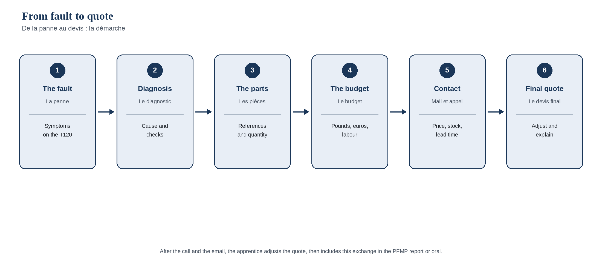

Baccalauréat professionnel · Anglais · Lycée professionnel
From fault to quote
De la panne au devis. Séquence d’anglais A2-B1 pour le baccalauréat professionnel Maintenance des véhicules, option motocycles. Volet anglais d’un travail transversal avec le compte rendu de PFMP.
Travail transversal Lettres et anglais
Cette séquence est le volet anglais d’un projet mené avec le compte rendu de PFMP. On y retrouve le même élève fictif, Lucas Martin, la même concession, Les Ateliers du Lauragais, à Saint-Orens-de-Gameville, le même tuteur, Julien Morel, et la même Triumph Bonneville T120.
Le volet Lettres apprend à rendre compte de la période, par écrit puis à l’oral. Le volet anglais part d’une panne constatée pendant la révision, jusqu’à l’échange avec Triumph, à Hinckley, et jusqu’au devis ajusté. Dans la tâche finale, l’élève réinvestit cet échange dans son compte rendu ou dans sa prise de parole.
Problématique
Comment, à partir d’une panne constatée sur une motocyclette, décrire le diagnostic en anglais, identifier les pièces à commander, établir un budget prévisionnel, puis obtenir de la maison mère, par mail et par téléphone, les renseignements qui permettent d’ajuster le devis ?
Objectifs
La séquence s’appuie sur le programme d’enseignement de langues vivantes des classes préparant au baccalauréat professionnel : arrêté du 3 avril 2019, publié au Journal officiel du 9 avril 2019 et au Bulletin officiel spécial n° 5 du 11 avril 2019 (NOR MENE1908627A). Le premier objectif de ce programme est l’acquisition des moyens linguistiques permettant de communiquer avec des collègues, des partenaires ou des clients étrangers. Les cinq activités langagières du CECRL y sont travaillées, avec une place importante laissée à l’oral, sans négliger l’écrit.
Le niveau visé ici est A2-B1. À l’examen du baccalauréat professionnel, les niveaux attendus sont B1+ pour la langue vivante A et A2+ pour la langue vivante B.
- Décrire une panne : symptômes, diagnostic et cause (expression orale et écrite).
- Mobiliser un lexique technique professionnel (pièces, références, devis, délais).
- Établir un budget prévisionnel : prix en livres sterling, conversion en euros, port, main-d’œuvre, totaux hors taxe et toutes taxes comprises.
- Rédiger un courriel professionnel et comprendre la réponse du service pièces.
- Conduire un appel téléphonique : épeler, confirmer des prix, des dates et des délais, faire reformuler.
- Ajuster le devis, puis réinvestir l’échange dans le compte rendu de PFMP ou à l’oral.
La démarche

La situation
Pendant sa PFMP aux Ateliers du Lauragais, Lucas Martin participe à la révision d’une Triumph Bonneville T120. Le client, M. Alain Costa, personnage fictif, avait pris rendez-vous pour l’entretien prévu. Il signalait aussi des à-coups à faible vitesse, un bruit métallique à l’arrière, et un frein avant moins mordant.
Avec Julien Morel, l’élève constate l’usure des deux bougies, d’un kit chaîne et pignons arrivé en fin de course, et des plaquettes avant, des deux côtés. Le filtre à huile doit aussi être remplacé, comme le prévoit l’entretien. Le kit chaîne n’est pas en stock. Il faut donc écrire et téléphoner au service pièces de Triumph Motorcycles, à Hinckley, dans le Leicestershire, pour vérifier les prix, la disponibilité et les délais, puis ajuster le devis remis au client.
L’entreprise, les personnes, l’établissement, les adresses de courriel, les numéros de téléphone et les montants utilisés pour l’exercice sont fictifs ou indicatifs. Les références de pièces correspondent à des numéros du catalogue constructeur, relevés chez des revendeurs ; les prix sont des prix indicatifs, arrondis, relevés en novembre 2026.
Tableau des séances
| Séance | Titre | Ce que l’élève fait | Activités langagières |
|---|---|---|---|
| 1 | The fault | Lit la situation, nomme les symptômes, le diagnostic et la cause, complète une fiche en anglais. | CE, EE, EOC |
| 2 | Building your vocabulary | S’approprie le lexique technique illustré : pièces, références, stock, délai, devis. | CE, EE, EOI |
| 3 | The provisional budget | Complète un tableau de devis : livres, euros, port, main-d’œuvre, totaux hors taxe et TTC. | CE, EE |
| 4 | A professional email | Étudie un modèle, complète un courriel, lit la réponse du service pièces. | CE, EE |
| 5 | A call to Hinckley | S’entraîne à l’appel : dialogue modèle, formules, jeu de rôle. | CO, EOI |
| 6 | Final task | Commande les pièces (mail et appel simulé), ajuste le devis, puis intègre l’échange au compte rendu ou à l’oral de PFMP. | EE, EOI, EOC |
Six séances courtes, conçues pour un horaire de lycée professionnel. La tâche finale relie explicitement l’anglais et les Lettres.
Évaluations
Une grille accompagne la tâche finale. Elle porte sur la clarté du diagnostic, l’exactitude des pièces et des quantités, la cohérence du budget, la qualité du courriel, la tenue de l’appel (épellation, prix, délais, reformulation), et le réinvestissement dans le compte rendu ou l’oral de PFMP. Les corrigés se trouvent à la fin du document téléchargeable.
Téléchargements
-
From fault to quote, bac pro motocycles (séances, tâche finale, grille et corrigés)
PDF Word (.docx) LibreOffice (.odt)
18 pages. Les prix sont des exemples pédagogiques, indicatifs, relevés en novembre 2026, puis arrondis. Ils ne constituent pas un tarif officiel de Triumph ni d’une concession.
Point de vigilance. Les adresses, les numéros, les interlocuteurs et l’entreprise d’accueil sont fictifs. On n’écrit pas à un service réel pour cet exercice. Les opérations décrites illustrent une situation de formation ; elles ne constituent pas une procédure technique à appliquer sur un véhicule.